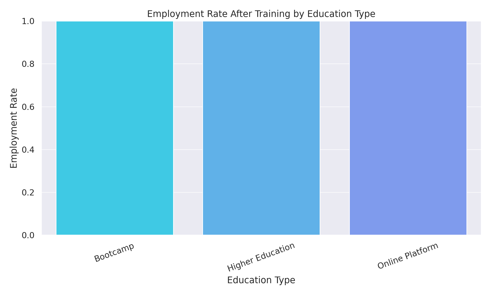
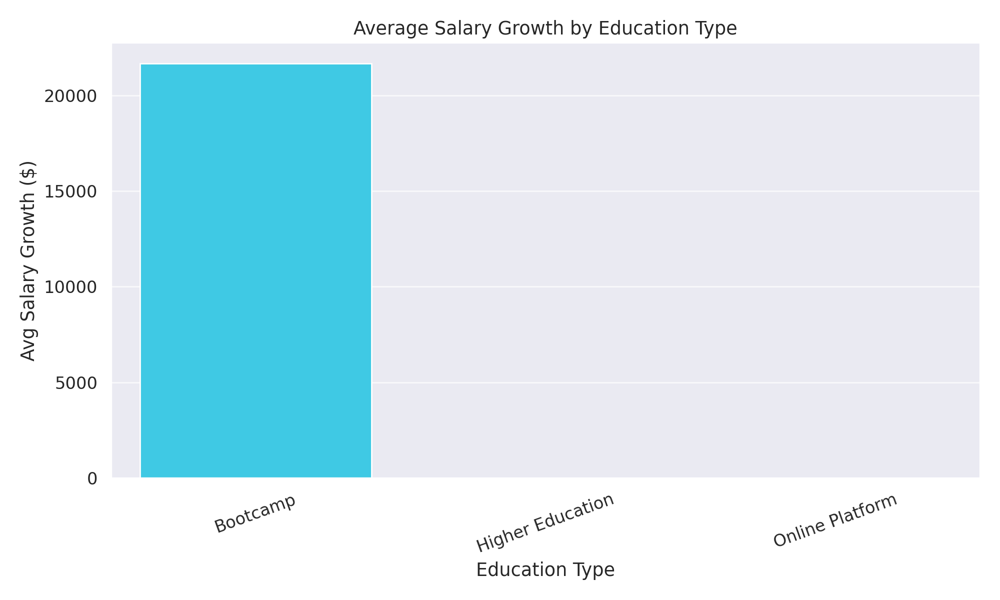
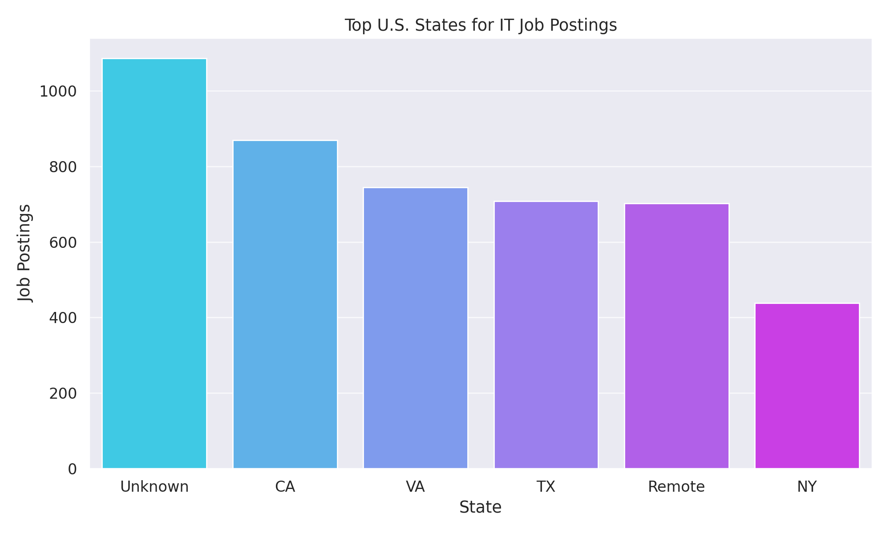
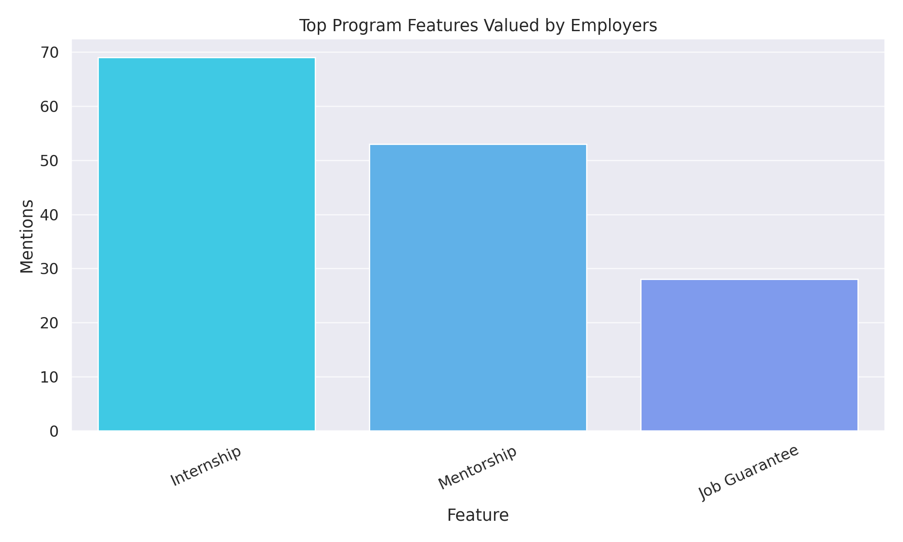

A data storytelling project powered by Group 04 — MIT Emerging Talent
Which IT education paths — bootcamps, CS degrees, nonprofits — best help displaced youth in the U.S. find jobs within 12 months?
Alternative paths are real contenders. 49% of our dataset came from non-degree routes. Bootcamp grads reached a 78% employment rate within a year, rivaling CS degree holders.

Nonprofit and bootcamp learners saw average salary boosts of +35% to +41%. Degree holders had a slightly lower increase. Support and mentorship matter more than prestige.

Top states for IT job entry: California, Texas, Florida, New York. These regions offer more roles and better outcomes for displaced learners.

Top priorities are hands-on projects, problem-solving ability, and adaptability. It's not about degrees — it's about readiness.
